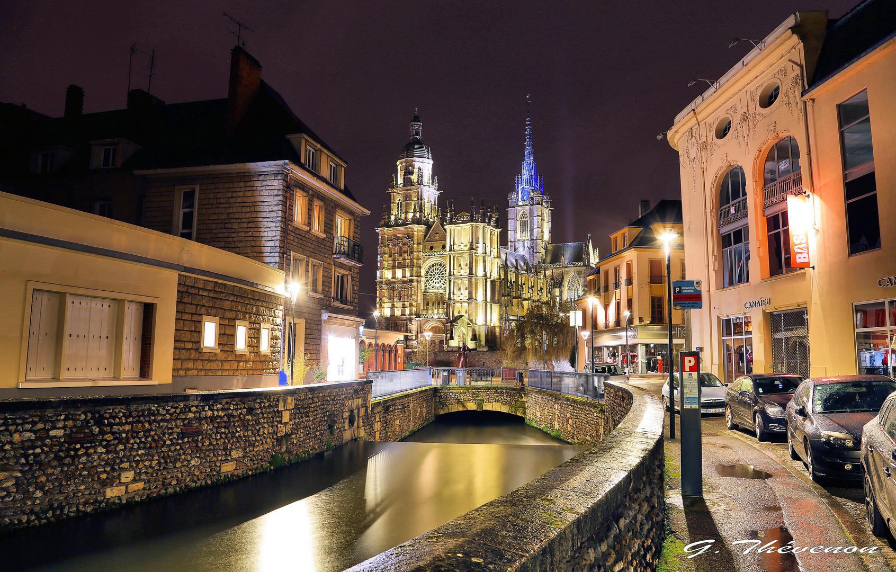

Bienvenue sur Evreux-Discover !
Nous sommes très heureux de vous présenter notre projet, codé afin
de participer aux olympiades de NSI.
Ce projet a été réalisé dans le cadre du cours de NSI (Numérique et Sciences Informatiques) en classe de première.

Cliquez ici pour accéder à notre carte d'Évreux
Notre projet
Notre projet consiste à recréer une carte en ligne (à la manière de Google Maps ou Apple Plans !) afin que vous puissiez retrouver des lieux
qui ne sont pas habituellement indiqués sur ces genres de plateformes.
A savoir que sur notre carte, vous pourrez retrouver les informations suivantes :
vous y trouverez :
Fonctionalitées
- Affichage de la carte d'Evreux avec différents fonds de cartes.
- Ajout de marqueurs sur la carte avec des popups et des liens personnalisés.
- Contrôle des couches pour afficher/masquer certains types de marqueurs.
- Possibilité d'ajouter un marqueur personnalisé sur la carte.
- Affichage des marqueurs regroupés par catégorie dans la barre latérale.
- Recherche rapide des lieux en fonction de leur catégorie.
- Affichage des informations détaillées d'un lieu lorsqu'on clique sur son marqueur.
- Possibilité de dessiner des formes sur la carte.
- Possibilité de localiser sa position sur la carte.
- Possibilité de basculer en mode plein écran.
Utilisation
Evreux-discover propose également des fonctionnalités avancées :
Qui sommes nous
Notre superbe équipe de codeurs est composée de :